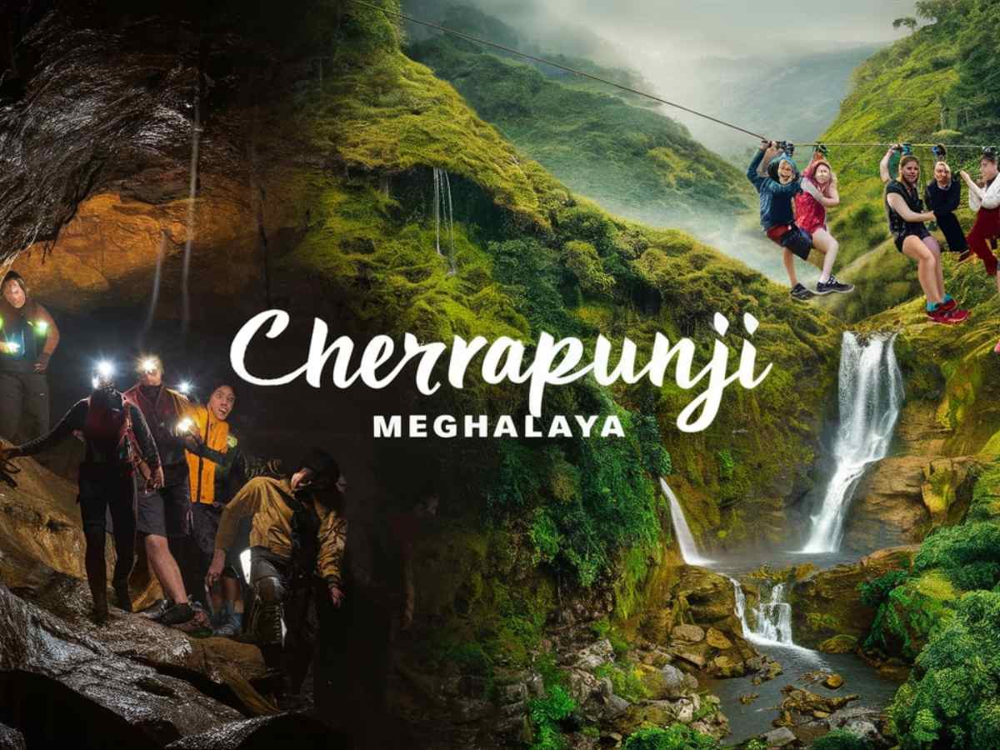
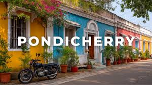
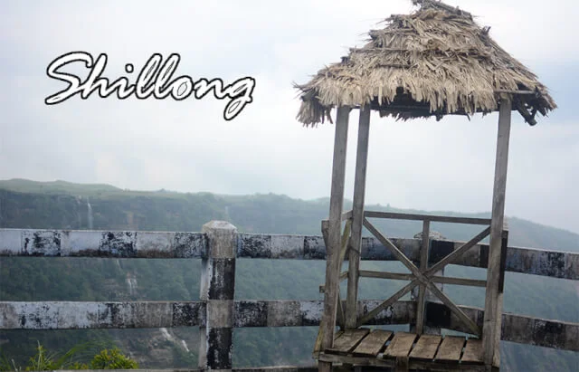
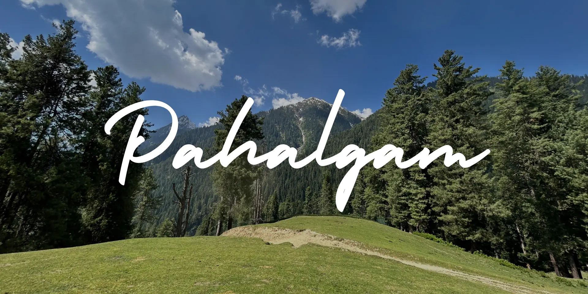
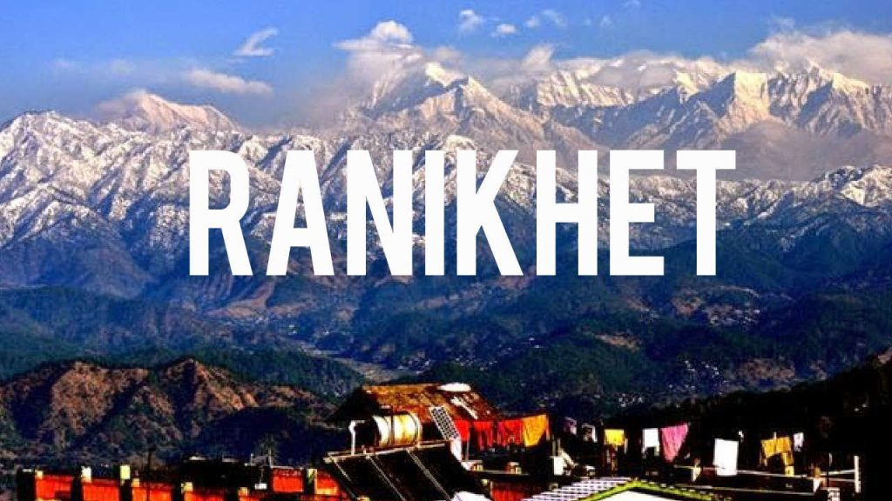

Cherrapunji, officially known as Sohra, is a renowned town in Meghalaya, India, famed as one of the world's wettest places. Located in the East Khasi Hills, it is famous for its extreme rainfall, stunning waterfalls, and unique living root bridges.
Shimla and Manali are premier hill stations in Himachal Pradesh, offering contrasting experiences. Shimla features colonial charm, the Ridge, and bustling Mall Road, while Manali is known for adventure sports, snow-capped peaks, and breathtaking mountain scenery.

Pondicherry (Puducherry) is a serene Union Territory in South India known as the "French Riviera of the East." It features French-Tamil architecture, clean beaches, a peaceful atmosphere, Auroville township, Sri Aurobindo Ashram, and White Town.

Shillong, the capital of Meghalaya, offers pleasant weather, scenic viewpoints, beautiful lakes, and well-maintained gardens. Visitors can explore attractions such as Ward's Lake, Lady Hydari Park, and Shillong Peak while enjoying the city's relaxed atmosphere.

Located amidst the confluence of Sheshnag Lake and Liddle River, Pahalgam is one of Kashmir's most beautiful destinations. It offers a peaceful retreat with attractions such as Betaab Valley, Chandawari, Aru Valley, and the picturesque Liddle River.

Ranikhet is a delightful destination in Uttarakhand known for its peaceful environment and natural beauty. Blessed with a favorable climate, it attracts visitors with attractions such as Chaubatia Orchards, Bhalu Dam, Dwarahat, and several scenic viewpoints.